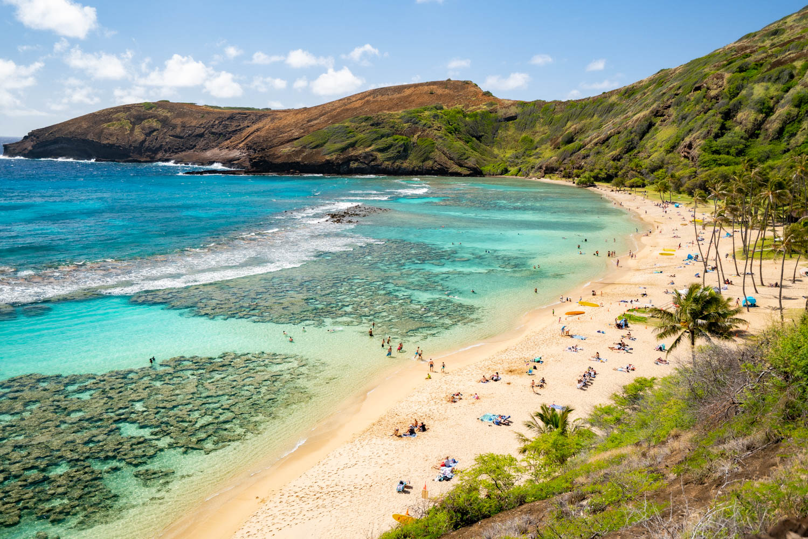
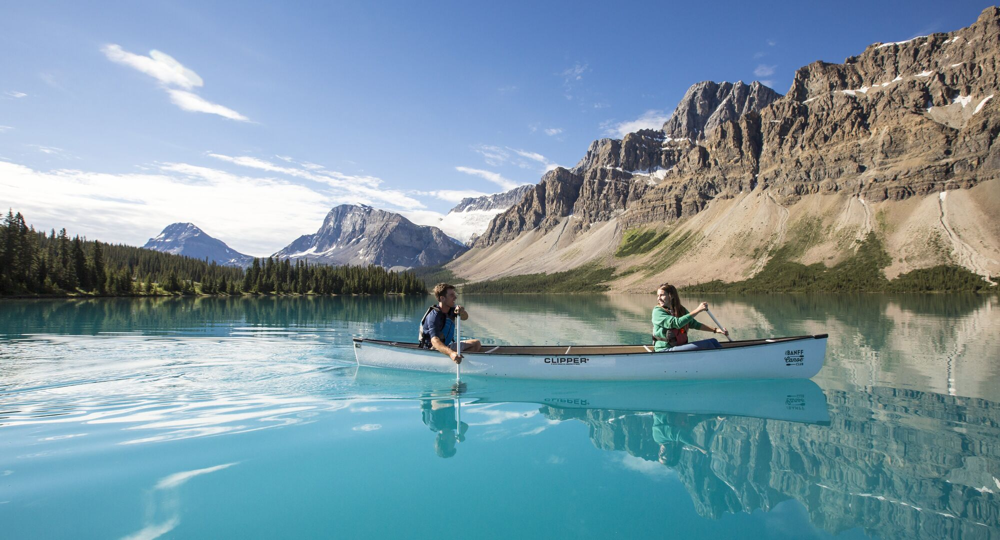

As I grew up, the places I visited and the experiences I had while there shaped my view of the world and me as an individual. I saw individuals from around the world working their hardest to create happiness and prosperity for their families. Additionally, the fun adventures in these locations have cemented lifelong memories in my mind. My favorite of all the places I've traveled to are New York City and Paris, France.
New York City Adventures
Times Square
Central Park
Statue of Liberty
Dumbo, Brooklyn
Empire State Building
Times Square
Dumbo, Brooklyn
Empire State Building
Paris, France
Arc de Triomphe
Eiffel Tower
Paris Temple
The Louvre
Palais Garnier
Eiffel Tower
Paris Temple
Palais Garnier
My Top 10 Favorite Travel Destinations
Paris, France
Eiffel Tower, the Paris Temple, and Palais Garnier
New York City
Times Square, Dumbo, and the Empire State Building
London, England
The London Eye, Sherlock Holmes' House, and Oxford nearby
Amsterdam, Netherlands
Windmills, canals, and tulips
Guatemala
Volcanoes, Lakes, and Ancient Ruins
Atlanta, Georgia
Chick-Fil-A, Coca-Cola, and College Football HoF Headquarters
Washington, D.C.
White House, Capitol, and Library of Congress
Seattle, Washington
Pikes Place Market, Underground tour, and Bellevue nearby
Oahu, Hawaii
Beaches, Snorkeling, and Pineapple
Banff, Alberta, Canada
Mountains, Lakes, and Hiking
Guatemala
Amsterdam
Oahu

Banff

Flight Delays Tableau Dashboard
An important part of traveling is checking to make sure your flight is on time. Here is a dashboard of flight delays.